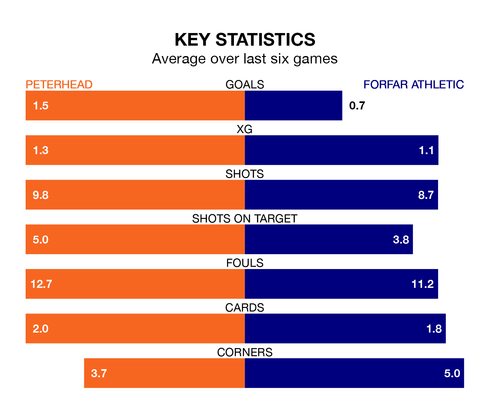

Relegation candidates Forfar Athletic face a challenge away against high-flying Peterhead at the Balmoor Stadium on Saturday.
Forfar Athletic are seventh in the League Two table, and have picked up seven wins and 15 draws in their 32 games to date.
The Blue Toon, meanwhile, are second in the standings with 52 points, having won 14 and drawn 10, and are 13 points behind table-toppers Stenhousemuir.
With 51 goals in 32 games so far this season, Peterhead are the league's second-highest scorers with 1.6 goals per game. And they are conceding fewer than average, letting in 34 goals at a rate of 1.1 per game.
Forfar, meanwhile, are below average scorers, with 1.0 goal per game, compared to a league average of 1.3. They have conceded 1.2 goals per game.
With Marc McCallum between the sticks, Athletic can rely on one of the league's safest pair of hands. He has kept 10 clean sheets in his 32 appearances this season, and only one other 'keeper – Stenhousemuir's Darren Jamieson – has been able to prevent the opposition scoring on more occasions in League Two.
In the Blue Toon's net, Stuart McKenzie has seven clean sheets in 31 games.
In the last 10 years, Peterhead and Forfar have played each other on 18 occasions. They won seven each, and they drew four times.
On average, the Blue Toon scored 1.4 goals and the Loons 1.4 in those matches.
Their last meeting was on February 17, when they played out a 3-3 draw.
The hosts are in mixed form in League Two, with two wins and three draws from their last six games.
With a win and three draws over that period, the Loons' form is worse – they have taken six points from 18, compared to Peterhead's nine.
Peterhead's last match was on April 6, a 2-2 draw against Bonnyrigg Rose Athletic, with Hamish Ritchie and Rory McAllister getting the goals for the Blue Toon.
Forfar lost 2-0 against Dumbarton last time out, also on April 6.
Updated: 10:01 (UTC), 12/04/24